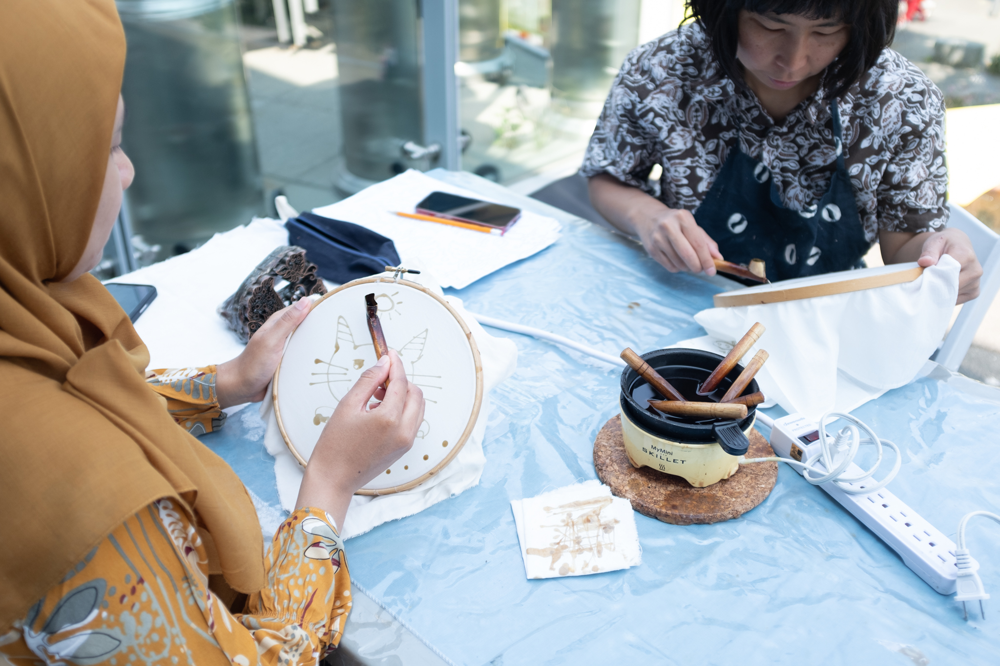
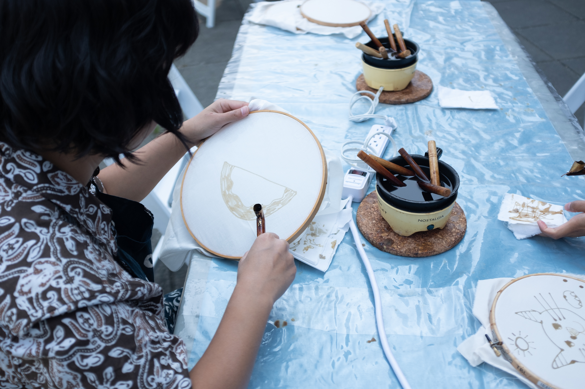
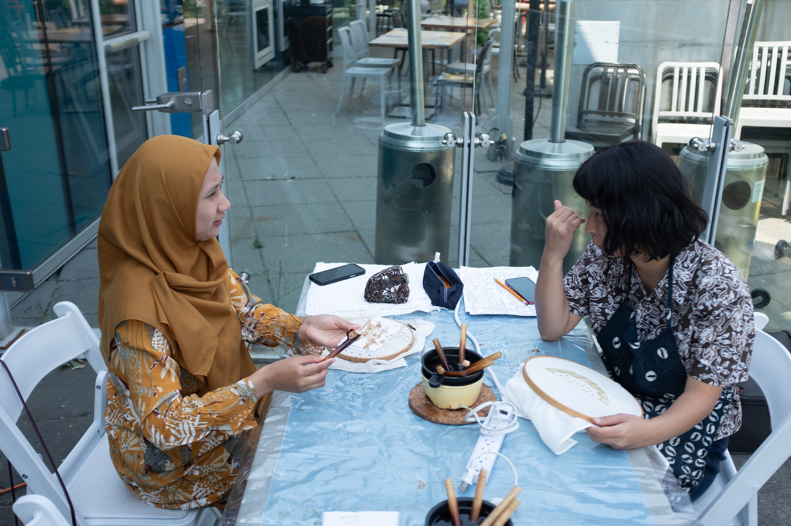
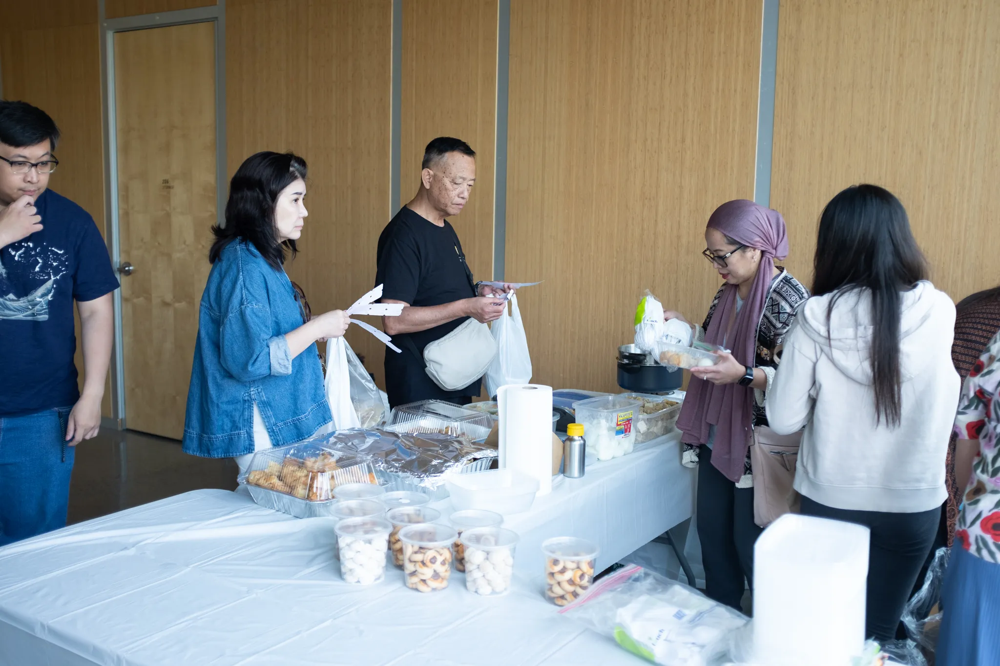
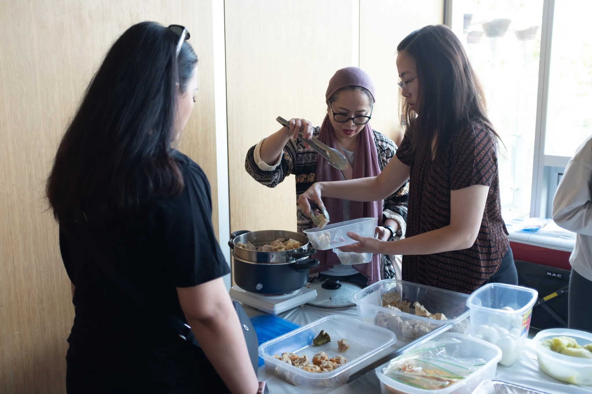
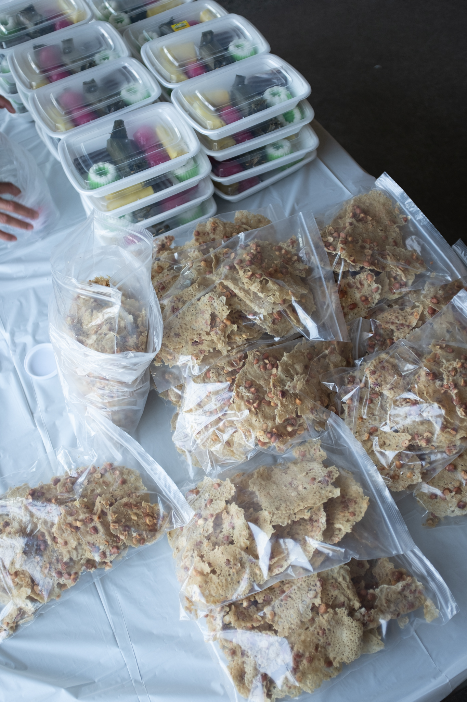
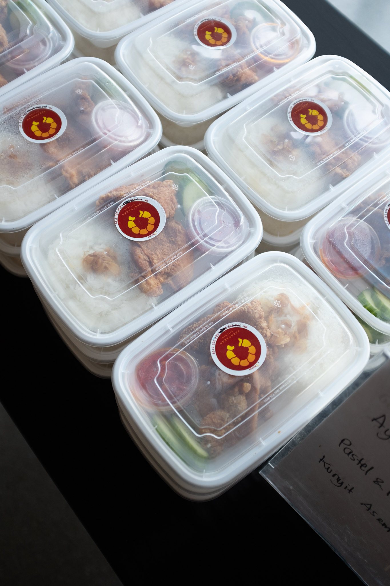
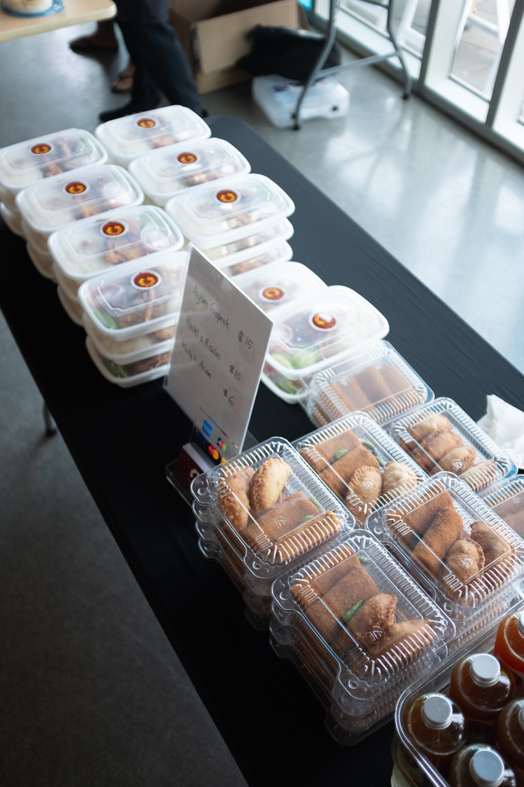
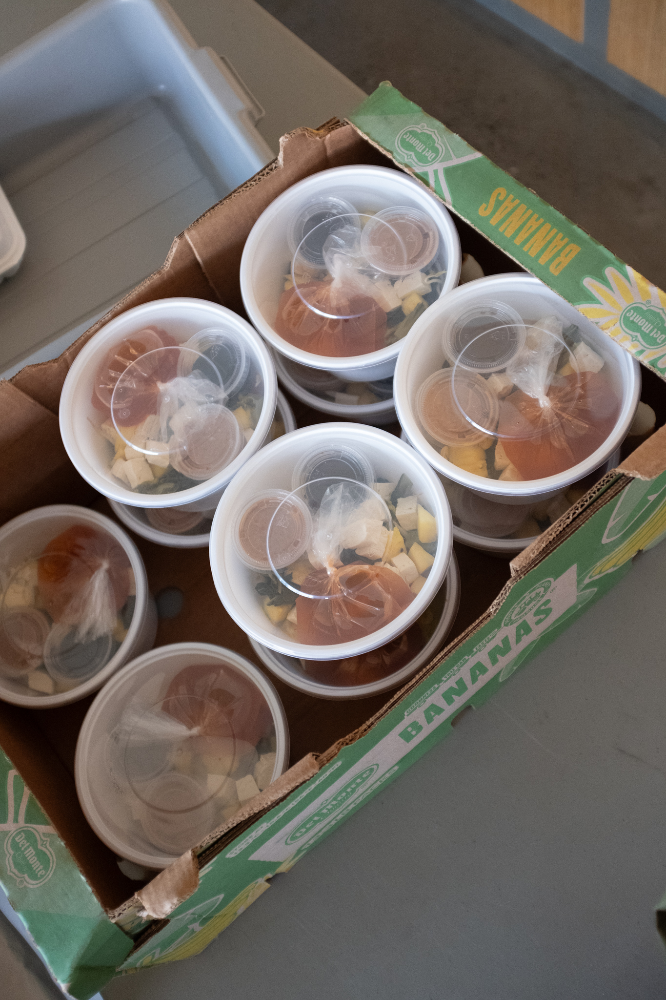

On July 27th, the PERMAI BC Association hosted a vibrant Summer Pudjasera, a celebration of Indonesian culture that seamlessly blended the art of Batik with the rich flavors of Indonesian cuisine. This members-only event offered an immersive experience that left attendees with lasting memories.



The event featured a captivating Batik workshop where participants explored the traditional Indonesian art of fabric dyeing. Under the guidance of skilled instructor Berda from The Batik Library, attendees learned to use the canting, a pen-like tool essential for creating intricate Batik Tulis designs. This hands-on experience allowed everyone to engage with an important aspect of Indonesian heritage, crafting their own unique Batik patterns while gaining a deeper appreciation for the skill and artistry involved.


No Indonesian celebration is complete without a feast, and the Summer Pudjasera did not disappoint. Guests were treated to a diverse array of dishes that showcased the best of Indonesian cuisine. From the savory Nasi Bali Campur and Ayam Geprek to the spicy variations of Sambal, and from the refreshing Jamu Kunyit Asem to the sweet indulgence of Es Buah and Jajanan Pasar, the menu offered a rich tapestry of flavors. Whether sampling Bakso, Pempek, Asinan Betawi, or Ketoprak, attendees enjoyed a culinary journey that highlighted the diversity and vibrancy of Indonesia's food culture.




The Summer Pudjasera was more than just an event; it was a celebration of community and cultural pride. Members gathered to enjoy the food, art, and each other's company, creating an atmosphere of warmth and connection. The success of the event reflects the strong bonds within the PERMAI BC Association and the shared commitment to preserving and celebrating Indonesian heritage. As the evening drew to a close, participants left with not just full stomachs, but also a deeper connection to Indonesia’s rich traditions, eagerly anticipating the next gathering that would bring them together once again.
We look forward to future events and can't wait to see you all again for another memorable occasion!
Photo credits: Russell Han Josef. Instagram: @thehan.jr